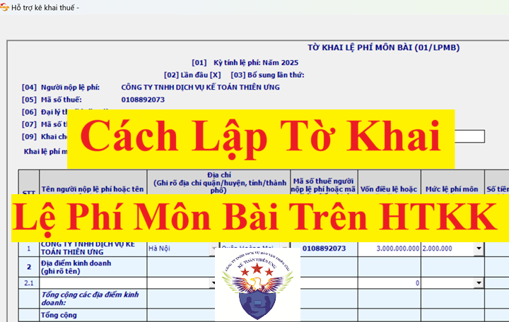
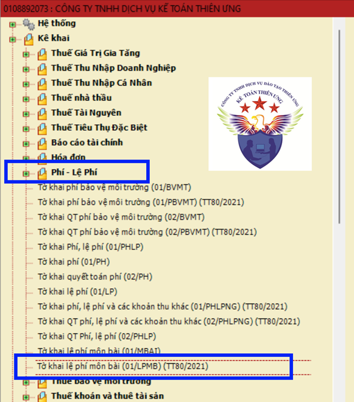
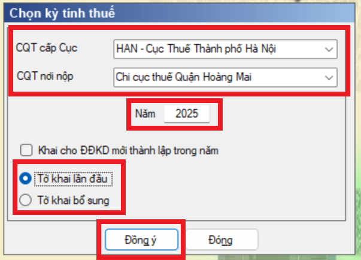
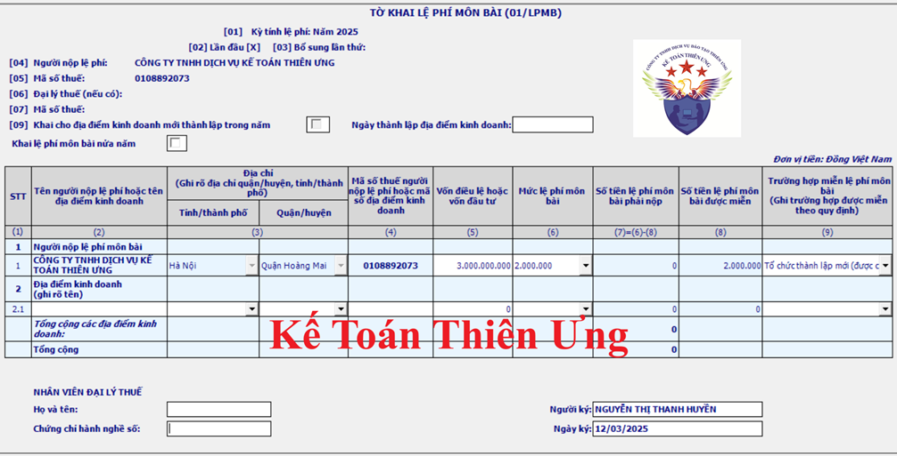

Hướng dẫn cách lập tờ khai lệ phí môn bài qua mạng hoặc trên HTKK; Cách lập Tờ khai Lệ phí môn bài lần đầu và cho chi nhánh Cùng tỉnh hoặc Khác tỉnh.
Trước khi hướng dẫn các bạn cách lập tờ khai lệ phí môn bài theo mẫu 01/LPMB ban hành kèm theo thông tư 80/2021/TT-BTC thì công ty Kế Toán Diệu Tâm xin được điểm qua 1 vài các quy định liên quan đến lệ phí môn bài mà các bạn cần biết như sau:
1. Đối tượng phải làm tờ khai lệ phí môn bài:
+ Doanh nghiệp chỉ cần nộp hồ sơ khai lệ phí môn bài khi: mới thành lập, khi mở thêm chi nhánh, văn phòng đại diện, địa điểm kinh doanh hoặc khi có thay đổi về vốn.
1. Đối tượng phải làm tờ khai lệ phí môn bài:
+ Doanh nghiệp chỉ cần nộp hồ sơ khai lệ phí môn bài khi: mới thành lập, khi mở thêm chi nhánh, văn phòng đại diện, địa điểm kinh doanh hoặc khi có thay đổi về vốn.
Doanh nghiệp, Chi nhánh, văn phòng đại diện và địa điểm kinh doanh mới thành lập: Khai lệ phí môn bài một lần khi mới thành lập
+ Đối với các doanh nghiệp đã và đang hoạt động (đã khai lệ phí môn bài khi mới ra hoạt động rồi): Không phải nộp hồ sơ khai lệ phí môn bài cho các năm tiếp theo (trừ trường hợp có thay đổi về vốn)
Trường hợp trong năm có thay đổi về vốn thì phải nộp hồ sơ khai lệ phí môn bài chậm nhất là ngày 30 tháng 01 năm sau năm phát sinh thông tin thay đổi.

2. Đối với doanh nghiệp mới thành lập:
Mặc dù được miễn lệ phí môn bài năm đầu thành lập (tức là năm đầu thành lập này sẽ không phải nộp tiền lệ phí môn nhưng sẽ phải nộp tờ khai lệ phí môn bài (Hạn nộp chậm nhất là ngày 30/01 năm sau năm thành lập)
3. Thời hạn nộp tờ khai lệ phí môn bài:
Theo khoản 1 điều 10 của nghị định 126/2020/NĐ-CP thì:
Theo khoản 1 điều 10 của nghị định 126/2020/NĐ-CP thì:
+ Đối với doanh nghiệp mới thành lập hoặc chi nhánh, văn phòng đại diện, địa điểm kinh doanh mới thành lập thì thực hiện nộp hồ sơ khai lệ phí môn bài chậm nhất là ngày 30 tháng 01 năm sau năm thành lập.
+ Trường hợp trong năm có thay đổi về vốn thì phải nộp hồ sơ khai lệ phí môn bài chậm nhất là ngày 30 tháng 01 năm sau năm phát sinh thông tin thay đổi.
+ Trường hợp trong năm có thay đổi về vốn thì phải nộp hồ sơ khai lệ phí môn bài chậm nhất là ngày 30 tháng 01 năm sau năm phát sinh thông tin thay đổi.
4. Nơi nộp tờ khai lệ phí môn bài:
Theo điểm k khoản 1 Điều 11 Nghị định số 126/2020/NĐ-CP thì:
- Đối với doanh nghiệp: Nộp cho cơ quan thuế quản lý trực tiếp
- Đối với đơn vị phụ thuộc (chi nhánh, văn phòng đại diện, địa điểm kinh doanh):
Theo điểm k khoản 1 Điều 11 Nghị định số 126/2020/NĐ-CP thì:
- Đối với doanh nghiệp: Nộp cho cơ quan thuế quản lý trực tiếp
- Đối với đơn vị phụ thuộc (chi nhánh, văn phòng đại diện, địa điểm kinh doanh):
+ Nếu thành lập ở cùng địa phương cấp tỉnh với trụ sở chính: thì nộp tờ khai cho CQT quản lý trực tiếp của trụ sở chính.
+ Nếu thành lập ở khác địa phương cấp tỉnh của trụ sở chính: thì nộp tờ khai cho CQT quản lý trực tiếp của đơn vị phụ thuộc (tại địa phương nơi đăng ký hoạt động)
+ Nếu thành lập ở khác địa phương cấp tỉnh của trụ sở chính: thì nộp tờ khai cho CQT quản lý trực tiếp của đơn vị phụ thuộc (tại địa phương nơi đăng ký hoạt động)
-------------------------------------------------------------------------------------------
Các cách/nơi để lập tờ khai lệ phí môn bài: có 2 cách:
+ Cách 1: Làm trên phần mềm HTKK
+ Cách 2: Làm trực tuyến (làm trực tiếp trên hệ thống thuế tại trang web thuedientu.gdt.gov.vn)
+ Cách 2: Làm trực tuyến (làm trực tiếp trên hệ thống thuế tại trang web thuedientu.gdt.gov.vn)
=> 2 cách này chỉ khác nhau về nơi làm tờ khai thôi còn mẫu biểu tờ khai đều là mẫu 01/LPMB ban hành kèm theo thông tư 80/2021/TT-BTC nên việc làm tờ khai lệ phí môn bài ở cả 2 nơi này đều là như nhau
Và thường thì kế toán sẽ làm tờ khai lệ phí môn bài trên phần mềm HTKK => Do đó ở dưới đây Kế Toán Diệu Tâm sẽ hướng dẫn các bạn cách làm tờ khai lệ phí môn bài trên phần mềm HTKK
Và thường thì kế toán sẽ làm tờ khai lệ phí môn bài trên phần mềm HTKK => Do đó ở dưới đây Kế Toán Diệu Tâm sẽ hướng dẫn các bạn cách làm tờ khai lệ phí môn bài trên phần mềm HTKK
-------------------------------------------------------------------------------------------
Cách Làm Tờ Khai Lệ Phí Môn Bài Trên Phần Mềm HTKK
Trường hợp số 1: Cách làm tờ khai lệ phí môn bài cho doanh nghiệp mới thành lập
Công ty Kế Toán Diệu Tâm được thành lập vào tháng 2 năm 2025.
Công ty Kế Toán Diệu Tâm được thành lập vào tháng 2 năm 2025.
+ Mã số thuế: 0113579246
+ Địa chỉ trụ sở chính: Số 24 Nguyễn Cảnh Dị, Phường Đại Kim, Thành phố Hà Nội
+ Vốn điều lệ đăng ký ghi trên giấy chứng nhận ĐKKD là: 3.000.000.000đ
+ Cơ Quan Thuế quản lý trực tiếp: Thuế Cơ Sở 13 TP Hà Nội
+ Vốn điều lệ đăng ký ghi trên giấy chứng nhận ĐKKD là: 3.000.000.000đ
+ Cơ Quan Thuế quản lý trực tiếp: Thuế Cơ Sở 13 TP Hà Nội
* Xác định nghĩa vụ kê khai: Phải nộp tờ khai lệ phí môn bài khi mới thành lập doanh nghiệp
- Thời hạn nộp tờ khai: Chậm nhất là ngày 30/01/2026
- Nơi nộp tờ khai: Thuế Cơ Sở 13 TP Hà Nội (là CQT quản lý trực tiếp)
* Xác định nghĩa vụ nộp tiền thuế:
+ Tại năm 2025: Vì là doanh nghiệp mới thành lập nên được miễn lệ phí môn bài năm đầu
(Theo Nghị định 22/2020/NĐ-CP ban hành ngày 24/02/2020, có hiệu lực từ 25/02/2020)
+ Từ năm 2026 trở đi: Không nộp tiền lệ phí môn bài hàng năm
* Cách làm tờ khai lệ phí môn bài cho doanh nghiệp mới thành lập trên phần mềm hỗ trợ kê khai:
Bước 1: Đăng nhập vào phần mềm HTKK bằng mã số thuế của công ty muốn kê khai là: 0113579246
Bước 2: Lựa chọn tờ khai
Vào mục “Phí - Lệ Phí”
=> Chọn “Tờ khai lệ phí môn bài (01/LPMB) (TT80/2021)”

Bước 3: Chọn kỳ tính thuế:

+ CQT cấp cục: Phần mềm tự động hiện thị theo thông tin đã khai báo ban đầu trên phần mềm HTKK (Cục thuế thành phố Hà Nội)
+ CQT nơi nộp: Phần mềm tự động hiện thị theo thông tin đã khai báo ban đầu trên phần mềm HTKK (Chi cục thuế Quận Hoàng Mai)
+ Năm: 2025
+ Tại ô “Khai cho địa điểm kinh doanh mới thành lập trong năm”: Không thực hiện tích chọn vì đang làm tờ khai LPMB cho doanh nghiệp là công ty Diệu Tâm chứ không phải là đang làm cho địa điểm kinh doanh mới thành lập nào đó
+ Chọn trạng thái tờ khai là: Tờ khai lần đầu
Vì đây là lần đầu tiên làm tờ khai LPMB cho kỳ tính thuế năm 2025 của công ty Diệu Tâm
Chỉ tích chọn “Tờ khai bổ sung” đối với trường hợp:
+ Công ty Diệu Tâm đã nộp “Tờ khai lệ phí môn bài lần đầu của kỳ tính thuế năm 2025” rồi và đã nhận được thông báo chấp nhận tờ khai của CQT rồi => Nhưng sau đó, Công ty Diệu Tâm lại phát hiện ra “Tờ khai lệ phí môn bài lần đầu của kỳ tính thuế năm 2025” có sai sót thì khi làm tờ khai điều chỉnh bổ sung cho kỳ tính thuế 2025 này thì sẽ chọn trạng thái tờ khai là “Tờ khai bổ sung”
+ Hoặc là với trường hợp làm tờ khai lệ phí môn bài khi doanh nghiệp thay đổi vốn điều lệ thì sẽ chọn trạng thái tờ khai là “Tờ khai bổ sung”
+ Công ty Diệu Tâm đã nộp “Tờ khai lệ phí môn bài lần đầu của kỳ tính thuế năm 2025” rồi và đã nhận được thông báo chấp nhận tờ khai của CQT rồi => Nhưng sau đó, Công ty Diệu Tâm lại phát hiện ra “Tờ khai lệ phí môn bài lần đầu của kỳ tính thuế năm 2025” có sai sót thì khi làm tờ khai điều chỉnh bổ sung cho kỳ tính thuế 2025 này thì sẽ chọn trạng thái tờ khai là “Tờ khai bổ sung”
+ Hoặc là với trường hợp làm tờ khai lệ phí môn bài khi doanh nghiệp thay đổi vốn điều lệ thì sẽ chọn trạng thái tờ khai là “Tờ khai bổ sung”
=> Sau khi đã chọn xong kỳ tính thuế thì thực hiện bấm “Đồng ý” vào nội dung tờ khai:
Bước 4: Kê khai thông tin lên tờ khai khai lệ phí môn bài (01/LPMB)

Tại chỉ tiêu số: [09] - Khai cho địa điểm kinh doanh mới thành lập trong năm: […] Ngày thành lập địa điểm kinh doanh: [……………..]
(Phần mềm HTKK sẽ tự động lấy thông tin theo thông tin bạn đã kê khai tại Bước 3 - Chọn kỳ tính thuế => Khi đã vào trong nội dung của tờ khai rồi thì phần mềm không cho phép bấm chọn hay sửa nữa => Muốn thay đổi thông tin tại chỉ tiêu [09] này thì bạn phải thực hiện kê khai, chọn lại tại Bước 3 - Chọn kỳ tính thuế)
Dòng “Khai lệ phí môn bài nửa năm”: không tích
(Chỉ tích khi đang thực hiện kê khai cho Chi nhánh, văn phòng đại diện và địa điểm kinh doanh thuộc trường hợp: Không được miễn lệ phí môn bài năm đầu và thành lập vào 6 tháng cuối năm => nên chỉ phải nộp LPMB nửa năm đầu thành lập đó)
- Dòng đưa số liệu: Dòng số 1 - Người nộp lệ phí môn bài
- Kê khai thông tin trên các cột:
+ Cột 2, Cột 3 - Tên , địa chỉ: Phần mềm tự động lấy theo thông tin đã khai báo ban đầu và lựa chọn tại phần chọn kỳ tính thuế
+ Cột 4 - Mã số thuế hoặc mã số địa điểm kinh doanh: Phần mềm tự động lấy theo thông tin đã khai báo ban đầu trên hệ thống phần mềm HTKK.
+ Cột 5 - Vốn điều lệ hoặc vốn đầu tư: gõ số tiền 3.000.000.000 (là số vốn điều lệ đã đăng ký trên GPĐKKD của công ty Diệu Tâm)
+ Cột 6 - Mức lệ phí môn bài: Bấm chọn mức 2.000.000
+ Cột 7 - Số tiền lệ phí môn bài phải nộp = Cột 6 - cột 8 (Phần mềm tự xác định)
Trong hình tờ khai lệ phí môn bài của công ty Diệu Tâm bên trên đang kê khai cột 7 = 0 (Hiểu rằng: Số tiền lệ phí môn bài phải nộp tại năm 2025 của công ty Kế Toán Diệu Tâm = 0)
+ Cột 8 - Số tiền lệ phí môn bài được miễn: Phần mềm tự xác định (Nếu tích chọn vào 1 trong các trường hợp được miễn lệ phí môn bài tại cột (9) thì phần mềm tự hiển thị số tiền lệ phí môn bài được miễn vào cột (8))
+ Cột 9 - Trường hợp miễn lệ phí môn bài: tích chọn vào dòng “Tổ chức thành lập mới (được cấp mã số thuế mới, mã số doanh nghiệp mới) theo quy định tại điểm c khoản 1 Điều 1 Nghị định số 22/2020/NĐ-CP.”
=> Sau khi kê khai xong thì Bấm “Ghi”
=> Sau đó Kết xuất tờ khai lệ phí môn bài dạng: XML để nộp qua mạng
- Thời hạn nộp tờ khai: Chậm nhất là ngày 30/01/2026
- Thời hạn nộp lệ phí môn bài năm 2026: chậm nhất là ngày 30/01/2026
- Thời hạn nộp tờ khai: Chậm nhất là ngày 30/01/2026
- Thời hạn nộp lệ phí môn bài năm 2026: chậm nhất là ngày 30/01/2026
(Đã nộp ngày 15/01/2026)
-------------------------------------------------------------------------------------------
Trường hợp số 2: Cách làm tờ khai lệ phí môn bài cho doanh nghiệp thay đổi vốn điều lệ
- Ngày 01/10/2025, Công ty Kế Toán Diệu Tâm làm thủ tục tăng vốn điều lệ đăng ký: từ 3.000.000.000đ lên thành 13.000.000.000đ
* Đối với nghĩa vụ làm tờ khai lệ phí môn bài:
Lưu ý: Theo Công văn số 7090/CTHN-TTHT ngày 10/3/2021 của Cục Thuế TP. Hà Nội về việc khai lệ phí môn bài khi thay đổi vốn thì:
- Ngày 01/10/2025, Công ty Kế Toán Diệu Tâm làm thủ tục tăng vốn điều lệ đăng ký: từ 3.000.000.000đ lên thành 13.000.000.000đ
* Đối với nghĩa vụ làm tờ khai lệ phí môn bài:
Phải nộp hồ sơ khai lệ phí môn bài chậm nhất là ngày 30/01/2026
(Chậm nhất là ngày 30 tháng 01 năm sau năm phát sinh thông tin thay đổi theo điểm a, khoản 1, điều 10 của Nghị định 126/2020/NĐ-CP)
(Chậm nhất là ngày 30 tháng 01 năm sau năm phát sinh thông tin thay đổi theo điểm a, khoản 1, điều 10 của Nghị định 126/2020/NĐ-CP)
Lưu ý: Theo Công văn số 7090/CTHN-TTHT ngày 10/3/2021 của Cục Thuế TP. Hà Nội về việc khai lệ phí môn bài khi thay đổi vốn thì:
Theo quy định tại khoản 1 Điều 10 Nghị định 126/2020/NĐ-CP, thời hạn nộp hồ sơ khai lệ phí môn bài khi có thay đổi vốn chậm nhất là ngày 30/1 năm sau năm phát sinh việc thay đổi.
Quy định nêu trên áp dụng đối với cả trường hợp điều chỉnh vốn nhưng không dẫn đến thay đổi bậc thuế môn bài.
Theo đó, trường hợp trong năm 2025, Công ty có tăng vốn điều lệ, cho dù không làm thay đổi bậc thuế thì cũng phải nộp hồ sơ kê khai lại phí môn bài chậm nhất là ngày 30 tháng 01 năm sau năm phát sinh thông tin thay đổi (năm 2026).
+ Từ năm 2026 trở đi: Không nộp tiền lệ phí môn bài hàng năm
+ Từ năm 2026 trở đi: Không nộp tiền lệ phí môn bài hàng năm
---------------------------------------------------------------------------------------------------
Chúc các bạn làm tốt việc kê khai thuế môn bài đầu năm cho DN mình! Các bạn muốn tìm hiểu sâu hơn về kế toán thuế, tự mình có thể lập báo cáo quyết toán thuế năm, có thể tham gia:
---------------------------------------------------------------------------------------